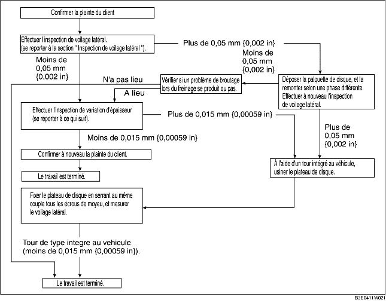

1. Le problème de broutage lors du freinage présente les 3 caractéristiques suivantes :
1. Le volant de direction vibre dans le sens de rotation. Ce symptôme est le plus perceptible lorsque les freins sont actionnés à une vitesse de 100-140 km/h {62,1-86,8 mph}.
1. Lorsque les freins sont actionnés, la carrosserie du véhicule est secouée d'avant en arrière. L'intensité des secousses ne dépend pas de la vitesse du véhicule.
1. Lorsque les freins sont actionnés, une force de pulsation tente de pousser sur l'arrière des plaquettes de frein. La pulsation est transmise à la pédale de frein.
2. Les détériorations suivantes sont les causes les plus courantes de broutage lors du freinage :
1. Si le voilage est supérieur à 0,05 mm {0,002 in} à une distance de 10 mm {0,39 in} du bord du disque, le plateau de disque s'use de façon irrégulière, parce que la plaquette entre en contact avec le plateau de façon inégale.
2. Si le voilage est inférieur à 0,05 mm {0,002 in}, l'usure est régulière.
1. Des freinages brusques répétés peuvent faire monter la température de certaines parties de plaquette de disque d'environ 1 000 °C {1 832 °F}. Ce qui provoque une déformation du plateau de disque.
1. Si le véhicule reste garé dans un endroit humide pendant une longue période, la corrosion attaque la surface de friction de la plaquette de disque.
2. La couche corrodée a une épaisseur inégale et présente souvent une surface ondulée, phénomène qui altère le coefficient de friction et provoque une force de réaction.

1. Pour fixer le plateau de disque et le moyeu, insérer une rondelle (épaisseur de 10 mm {0,39 in}, diamètre intérieur supérieur à 12 mm {0,47 in}) entre le boulon de moyeu et l'écrou de moyeu, puis serrer tous les écrous de moyeu.
2. Après avoir serré tous les écrous de moyeu au même couple de serrage, placer le comparateur à cadran sur la surface de friction du plateau de disque, à 10 mm {0,39 in} du bord du plateau de disque.
3. Faire tourner le disque une fois, et mesurer le voilage.
1. Nettoyer la surface de friction plateau-plaquette du disque à l'aide d'un produit de nettoyage pour frein.
2. Mesurer les points indiqués sur l'illustration à l'aide d'un pied à coulisse (micromètre).
3. Soustraire la valeur minimum de la valeur maximum et, si le résultat n'est pas conforme aux spécifications, usiner le plateau disque à l'aide d'un tour.
1. Mesurer l'épaisseur du plateau de disque.
1. Soulever l'avant du véhicule à l'aide d'un cric, et le caler avec des chandelles de sécurité.
2. Déposer les roues et les pneus.
3. Vérifier l'épaisseur restante des plaquettes.
4. Remplacer les plaquettes dans leur ensemble (roues droite et gauche) si l'une d'entre elles a atteint ou dépassé la limite d'épaisseur tolérée.